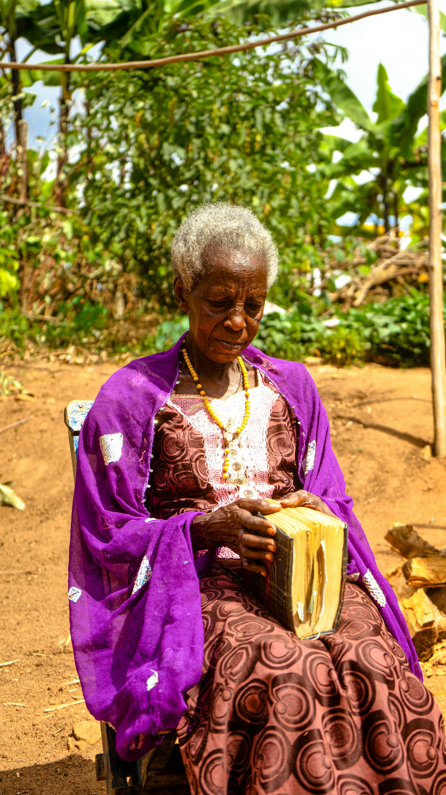
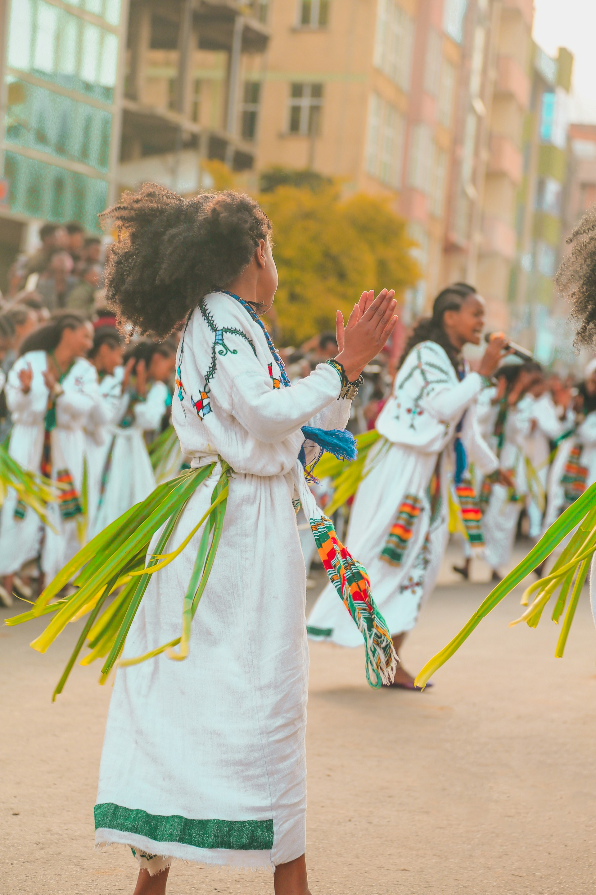
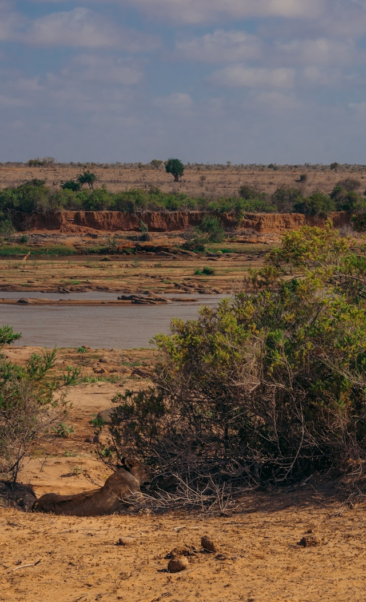

Africa Lenses
Witness the Timeless Spirit of the African People
Preserving the rich cultural tapestry, from the African region's landscapes to the vibrant traditions of different African cultures.
View Featured StoriesMore Than Just Photos, It's Preservation.
We are dedicated to documenting the **Kunama culture (Cunama)**, known for their unique agrarian traditions, distinct language (Blin/Kunama), and exquisite artistry. Every photograph is a tribute to their resilience and beauty.
Our Focus Areas

Portraits of Elders
Capturing the wisdom etched in the faces of the community's revered figures.

The Harvest & Ceremonies
Documenting the vibrant **Shamo** dances and harvest rituals, rich with rhythm and color.

Tsavo East National Park
The vast, sun-drenched landscapes that form the historical and cultural home of the Tsavo East National Park.
Ready to Commission a Story?
We offer specialized documentary, cultural, and commercial photography services across Eritrea.
Inquire Now